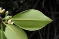
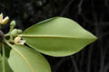

Diagnostic characters
Botany & morphology
Regeneration
Reproductive biology
Ecology
Distribution
Uses
Evergreen tree, often appearing buttressed, multitrunk with stilt and prop roots; bark brown, with vertical clefts. Inflorescence in leaf axils. Flowers white or cream, petals hairy; stamens 12 - 15.
Leaves simple, opposite, short petiolate, broadly elliptic-ovate, apex apiculate, base cuneate, entire, coriaceous, 10-15 x 5-9 cm.
Inflorescences axillary cymes, 2-4 flowered.
Flowers white or cream, 2-4 flowered, bisexual, pedicellate; calyx 4-lobed; petals hairy, Stamens (8-)14 - 16 (-22), sometimes some of them very small, staminode - like or filamentous.
Fruit brown, obopyriform; hypocotyl 30 – 50 cm long, smooth, cylindrical.
Germination true-vivipary type.
Pollination by wind and insects.
Generally found in higher tidal contours and lower to middle tidal reaches.
Queensland Papua New Guinea, and the Solomon Islands. In India it occurs in Pichavaram of Tamil Nadu State.
Wood potential source of tannin and used as a substitute for petroleum coke for calcium carbide, besides being used as fuel-wood and in medicines; tannin from bark used as mosquito repellent. Leaves used as a fodder. The intricate stems with several stilt roots are effective as tide brakers and check land run off and form an ideal niche for several faunal species.
Top of the page